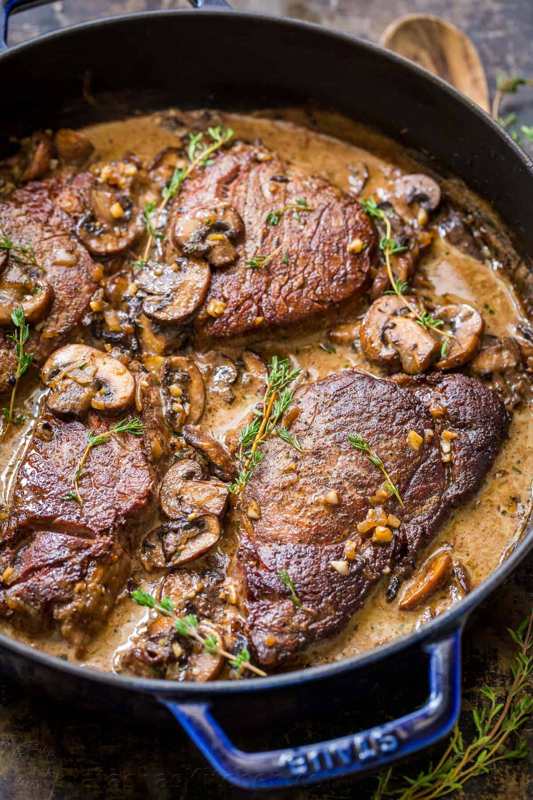

Preheat oven to 425˚F with a rack in the
lower third of the oven (you want the whole chicken
to be in the center of the oven).
Line a large roasting pan with onion
slices, drizzle with olive oil.
Remove giblets from chickens and pat dry
inside and outside with paper towels. Season inside
each chicken with 1/2 tsp salt and 1/4 tsp black
pepper then stuff each with 2 lemon quarters, 1/2 of
garlic head and 2 sprigs rosemary.
Place chicken over the onions
breast-side-up. Tie legs together and tuck the wings
under the chicken so they don’t scorch.
Melt butter and brush top and sides of
chicken and immediately season each chicken with 2
tsp salt and 1/2 tsp black pepper. Butter and season
chickens one at a time so the butter doesn’t
solidify making it difficult for seasoning to stick.
Bake at 425˚F for 1 hour and 45 minutes
to 2 hours, depending on the size of your chicken or
until the internal temperature at the deepest part
of the thigh reaches 165˚F, and juices run clear
when you cut between the leg and the thigh.* Rest
chicken for 15 minutes after it comes out of the
oven before slicing and serving.
See Recipes
Pan Seared Steak with Garlic Butter
This Pan-Seared Steak
has a garlic butter that makes it taste like a
steakhouse quality meal. You'll be impressed at
how easy it is to make the perfect steak that's
seared on the outside, and perfectly tender
inside..
Teriyaki Salmon
This teriyaki salmon
recipe is a winner! Simple ingredients and no
lengthy marinating needed. A flaky, juicy and
delicious teriyaki glazed salmon recipe.

Filet Mignon
This pan-seared Filet
Mignon recipe really and truly is an excellent
way to make filet mignon. Every bite is so
flavorful with that light mushroom wine cream
sauce. Searing the beef makes it melt-in-your
mouth tender.
Creamy Tuscan Chicken
Pair this Tuscan
Chicken with pasta, rice, or mashed potatoes for
an easy weeknight dinner the entire family will
love!